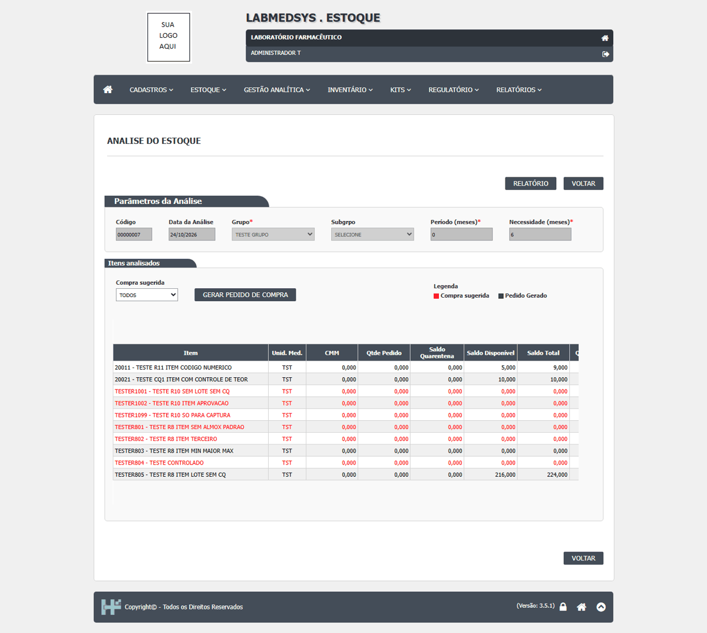
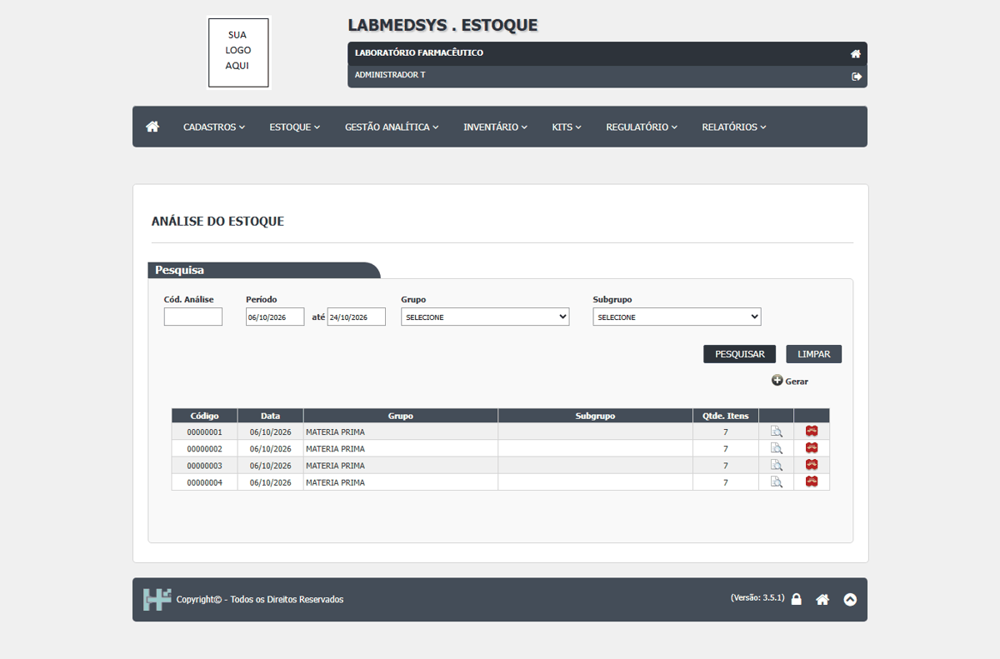

DV-EST-134 · A Análise de Estoque sugere compra negativa (-490) e aceita período de CMM igual a 0
Para o grupo `TESTE GRUPO`, o `TESTER803` (mínimo 500, máximo 10, sem estoque) sai com Qtde Sugerida de **-490,000**. A análise também foi gerada com período de CMM igual a 0, respondendo "Análise concluída!" sem recusa e sem aviso.
Como reproduzir o erro, passo a passo
- Abrir Gestão Analítica › Análise de Estoque › Incluir, grupo TESTE GRUPO, período 0, necessidade 6, e GERAR ANÁLISE.
- Ler a linha do TESTER803.
Esperado
Sugestão de compra nunca negativa; período de consumo mínimo de 1 mês.
Obtido
-490,000 e período 0 aceito.
Evidência (captura da tela)

DV-EST-020 · Análise do Estoque aceita 13 meses: a trava de 12 meses está comentada no código
O fluxo prevê o limite de 12 meses para o período de análise e para o período da necessidade. O código tem a validação **comentada**. A tela aceitou 13 meses nos dois campos.
Como reproduzir o erro, passo a passo
- Abrir Estoque › Análise de Estoque e escolher INCLUIR.
- Informar um período de análise de 13 meses e uma necessidade de 13 meses.
- Gerar a análise.
Esperado
Recusa: "Período de análise não pode ser superior a 12 meses!".
Obtido
Aceitou: "Análise concluída!" (análises 00000005 e 00000006).
Sem captura de tela registrada para este defeito.
DV-EST-135 · A pesquisa por período da lista da Análise de Estoque usa a data inicial nos dois limites e traz só as análises do primeiro dia
Pesquisando de 06/10/2026 a 24/10/2026 vieram só as análises 00000001 a 00000004 (de 06/10). Ficaram de fora as 00000005 e 00000006 (12/10) e a 00000007 (hoje).
Como reproduzir o erro, passo a passo
- Abrir a lista de Análise de Estoque, escolher o período 06/10/2026 a 24/10/2026 e Pesquisar.
Esperado
Todas as análises do período.
Obtido
Só as do dia inicial.
Evidência (captura da tela)
